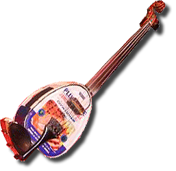
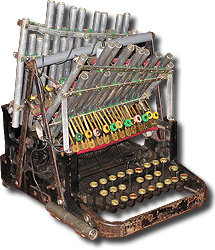
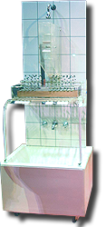

Instrumentos Informales
LUTHIER ES LA PALABRA FRANCESA QUE DESIGNA AL FABRICANTE DE INSTRUMENTOS DE CUERDA. EL GRUPO ADOPTÓ ESTE NOMBRE POR SU COSTUMBRE DE CREAR INSTRUMENTOS A PARTIR DE MATERIALES POCO COMUNES, COMO LATAS, MANGUERAS, TUBOS DE CARTÓN, GLOBOS, ETCÉTERA.

Latin o Violin de Lata

Este instrumento tiene como finalidad imitar a un violín. El latín tiene un puente, un mango o diapasón, clavijas y cuerdas de violín. Tiene todos aquellos elementos propios de un violín, pero lo que lo hace distinto de este, es que su cuerpo o caja de resonancia es una lata de jamón.
Dactilófono o máquina de tocar

Es uno de los primeros instrumentos del conjunto y fue construido por Gerardo Masana a partir de una vieja máquina de escribir. Posee unos tubos delgados de aluminio que cuando son percutidos por las teclas de la máquina dan un sonido similar al de un xilófono.
Desafinaducha

Es uno de los instrumentos que integran el Cuarteto de Baño, está inspirado en la ducha de un cuarto de baño. El chorro de agua cae sobre las aspas de un molino. Este, a través de una polea, hace girar unas ruedas con martillitos de acrílico que percuten en las placas de un metalofón. El efecto logrado es un "tremolando" que, mezclado con el fluir del agua, produce un sonido dulce y peculiar.